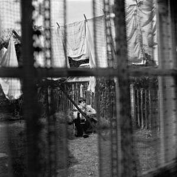
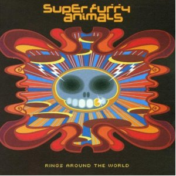

Top 100 Albums of 2000-2009 (Part One: Bubbling Under)
By No Ripcord Staff
 Camera Obscura
Camera Obscura
 Bruce Springsteen
Bruce Springsteen
 Bloc Party
Bloc Party
The votes have been counted, articles have been assembled, and No Ripcord’s Top 100 Albums of 2000-2009 list is just about ready to go. However, there were a number of artists who managed to win significant support from the No Ripcord staff without quite managing to sneak into the lower regions of the final century. So, here we present a selection of those records that almost made it, the albums that aren’t quite our favourites but are strong enough that we feel we couldn’t miss the opportunity to write about them.
[Bubbling Under] | [Individual Writers’ Picks] | [100-81] | [80-61] | [60-41] | [40-21] | [20-1]
Elbow
“The Seldom Seen Kid”
(Fiction/Polydor/Geffen – 2008)
I was lucky enough to see Elbow’s big homecoming gig in Manchester a couple of years ago. Closing with One Day Like This, it was clear what this album was all about. Tickertape cascaded down and everyone sang and swayed in unison to that glorious refrain: “Throw those curtains wide/One day like this a year would see me right.” It’s music to unite people; everyone likes this album, but no one loves it. Everyone gets goosebumps whenever they hear the yearning trumpet on Starlings. Everyone nods their head and stamps a foot to Grounds For Divorce. Everyone wants to cry at the tale of a man who “grows his very own brambles” on Some Riot. Everyone smiles when they listen to it. That’s what matters. James McKenna
M83
“Dead Cities, Red Seas & Lost Ghosts”
(EMI/Mute/Virgin – 2003)
This album is hero music. When I hear the opening chords of Unrecorded, I want to get in a slow-motion car chase, do a flying leap off a bridge, or personally relive the fight between Neo and Agent Smith in The Matrix. It’s that epic and that huge. Dead Cities… will undoubtedly go down as M83’s best record, despite the recent success of the entirely decent Hurry Up, Were Dreaming. It’s a dark, brilliant album, featuring minimal vocals but saying all it needs to with dense layers of shoegaze keyboard. It makes quite a powerful statement, one that M83 has been unable to repeat despite repeated attempts and increasing popularity. Andrew Baer
Camera Obscura“Let's Get Out Of This Country”
(Merge – 2006)
In the same way as fellow Scots Belle & Sebastian broke free of their indie shackles and widened their horizons with Dear Catastrophe Waitress, Camera Obscura made their bid for the mainstream with Let’s Get Out Of This Country. Their confidence shines through, as do the melodies which are beautifully complemented by a magician’s box of instrumental arrangements. Whereas their previous albums had the tendency to err on the wrong side of timid, here Camera Obscura were loud and proud, from the country-tinged title track to the horn raucous that closes Razzle Dazzle Rose. Also, there’s probably never been a finer response song than the epic Lloyd, I’m Ready To Be Heartbroken. Joe Rivers
Bruce Springsteen“The Rising”
(Columbia – 2002)
When I went to school one Tuesday morning in September, I struggled to fully comprehend what I had watched on my television screen earlier that morning, but the knowledge that so many had been killed was enough to make me know that my anger and sadness was justified. But mere months later, Bruce Springsteen released his first E Street Band record in over a decade, and made 9/11 its core subject matter. The resulting album, The Rising, is an album so universal that it touches hearts to this day. An all-time great lyricist vocalizing feelings in the aftermath of a national tragedy resulted in tearjerkers such as Paradise and You’re Missing, but he also turned every teardrop into untainted hope and unfettered optimism with The Rising and My City Of Ruins. At a time when the entire country needed hope, Springsteen gave it best. Forrest Cardamenis
The Horrors
“Primary Colours”
(XL – 2009)
While it wasn’t unusual to hear reinterpretations of post-punk and shoegaze music from many indie rock bands late in the 00s, The Horrors caught many off guard. Their 2007 release, Strange House, had essentially been a theatrical and predictably loud salute to Bauhaus, which led to a lukewarm reception and dismissal from their label. Refusing to fade into obscurity, the band responded with Primary Colours, exhibiting no hesitancy about reaching into the treasure trove bestowed upon them by The Velvet Underground (I Only Think of You), Joy Division (Scarlet Fields) and The Psychedelic Furs (Primary Colours), but caring enough to offer something better than a simple regurgitation of 70s/80s rock. Mirror’s Image and New Ice Age didn’t redefine post-punk, but considered the genre’s quality and took it up a notch. Very haunting and beautifully rendered, Primary Colours was 2009’s best album that wasn’t by Animal Collective or Grizzly Bear. Sean Caldwell
Grizzly Bear
“Yellow House”
(Warp – 2006)
2009’s Veckatimest may have been Grizzly Bear’s breakthrough album, but Yellow House was the reason so many people were listening in the first place. It’s a slow burner, for sure - the understated production may have put some people off before they really gave this album a chance - but with repeated listens the record really starts to reveal itself. Perhaps my love of headphone listening is key to my relationship with the album: there’s a really intimate feel throughout Yellow House, with whispered vocals and an airy ambience making this a perfect accompaniment to long journeys and sleepy evenings. Joel Stanier
The Walkmen
“Bows + Arrows”
(Record Collection – 2004)
The Walkmen have a distinct, wonderfully designed sound, and Bows + Arrows showcases it in its finest and most focused form. Frontman Hamilton Leithauser, in sophisticated maudlin style, swings his audience back and forth on the emotional spectrum as if it were a near-empty glass of whisky. Bitterness gives way to anger, loneliness, jealousy, dejection, and contempt, and every sensation is more palpable than on Everyone Who Pretended to Like Me Is Gone. The Rat is an absolute highlight: a showcase of individual talent and group cohesion that emerges when The Walkmen pin the throttle down. But later, Hang on Siobhan proves itself a standout on precisely the opposite end of the scale. Bows + Arrows is the sound of a band with a clearly defined niche and impressive versatility within it. Good things usually result from these situations, and this album certainly proves that. Ben Jones
Fennesz
“Venice”
(Touch – 2004)
Christian Fennesz’s follow up to 2001’s much-lauded Endless Summer follows much the same template. Whereas that album was a summery, Californian Beach Boys tribute (of sorts), Venice stands as its chillier European counterpart. Melodies are still present, albeit more subtly embedded in the wash of processed guitar ambience. David Sylvian returns a favour by appearing on one track, the lovely Transit, his distinctive vocal tone adding an extra layer of sonic texture to an already compelling track. The rest of the album is instrumental, which serves to highlight this one song as the album’s central core. It’s an interesting ploy, but one that works. While not quite as good as its predecessor Venice is still one the decade’s finest slices of electronica. David Wood
Aphex Twin
“Drukqs”
(Warp/Sire/WEA Records – 2001)
Drukqs is a twin-headed tornado of intense, analogue beat-machinery mixed with fresh breaths of petite, prepared piano pieces, though also notable is the Cornish song titles. While this isn't the first time we've seen references to the county where James was raised, here they’re hurled heavily so that the Cornwall of our imaginations changes from tranquil countryside to thick, electronic territory of computer programs resting amongst mountains of MIDI sine-waves. At a hundred minutes, it’s a gargantuan gulp of sonic memory to ingest. If taken sometimes in full and sometimes in small parts, you'll realize that this is also Aphex Twin's most emotionally melodious record and that these beats actually feel like they mean something to James. Proving once again that he's a master engineer, some parts of the album are jaw-dropping; the last minute of Ziggomatic V17 captures James at his most cosmic. Michael Iovino
Bloc Party“Silent Alarm”
(Wichita – 2005)
Walking a fine line between Kele Okereke's introvert lyrics and the extrovert, tightly-coiled music, Silent Alarm slots neatly into a wider canon of classic British albums that shoot for the moon and get pretty much all the way there. Bloc Party went a step beyond mere 'crossover' with their debut – they became one of the most-loved bands in Britain as a result of this: a powerhouse starting point they still have yet to top. Festival-slaying anthems like Helicopter and Banquet sit comfortably next to more tender, downbeat numbers like Blue Light and So Here We Are, all bound by a very tangible passion which proved crucial in separating them from the pack during the mid-00s indie explosion. Boiled down, it is the sound of a band putting their faith into the power of human expression, and reaping untold rewards as a result. Gabriel Szatan
Paul McCartney
“Chaos and Creation In The Backyard”
(Parlophone/Capitol/EMI – 2005)
Decades after his creative heyday, many had learned to stop expecting great things from Paul McCartney, even Paul himself, but super-producer Nigel Godrich was smart enough to call bullshit. It turns out all that was needed was a little cajoling and the occasional “no”, a response which McCartney had grown accustomed to not hearing. What resulted was one of his best and most consistent records, showing the songwriting craft that made the royalty checks flow over the years. Times have changed and it unfortunately went under the radar but to those who still care, good songs will always be good songs. Alan Shulman
M.I.A.
“Arular”
(XL/Interscope – 2005)
Long before she was used as a glorified backing dancer to help Madonna appear edgy, M.I.A. was causing a stir with her own political views on albums such as Arular, which distilled an intoxicating mixture of bhangra, baile funk, hip-hop and dancehall. This cross-cultural sound clash reflected her transnational heritage, and while Arular wasn’t quite as monumental a record as some critics would have you believe, it was daring and fresh (if a little chaotic). The cockiness of baile funk, swagger of hip-hop and a DIY aesthetic give the record a raw or unfinished feel, depending on your point of view. Gary McGinley
Dirty Projectors
“Bitte Orca”
(Domino – 2009)
Dirty Projectors created a really remarkable thing with Bitte Orca: a pop record that thinks it’s a prog album. Or perhaps vice versa – I’ve never really figured out how the band made something that is paradoxically both complicatedly fiddly and light-heartedly indiepop. Take Temecula Sunrise – that riff is as complex as a cadenza, but the chorus is pure summery pop joy. Elsewhere they gleefully poach R&B tropes on Stillness Is The Move, not so much a deconstruction as a loving tribute to Mariah Carey or Beyonce’s melisma. Some critics found it a bit too clever, but the great thing about its lavish detail is that you never get bored of it. It’s like a patchwork quilt of genre borrowings and structural innovations, and the amazing thing is, it works. Stephen Wragg
The Wrens
“The Meadowlands”
(Absolutely Kosher/LO-MAX – 2003)
The Meadowlands has been a persistent and extremely welcome presence in my life since I first heard it at the tail end of 2003. I can vividly recall receiving an email from a reader who was very angry about its omission from our Top 50 Albums of 2003 feature; I remember scoffing at the time, then I actually heard the record. Given that the No Ripcord staff has criminally overlooked the finest indie-rock album of the decade for the 2000s list, I’ll be expecting to hear from this person again. And this time, I’ll be right behind him. The Meadowlands is an immense achievement, which embodies the frustrations and heartbreak of bunch of guys in their thirties who have been burned by the music industry and by relationship breakdowns. It packs an emotional punch, the potency of which has not diminished in nine years of heavy listening. One to cherish. David Coleman
Super Furry Animals
“Rings Around The World”
(Epic – 2001)
It’s hard to believe that this album didn’t make the list. This Mercury Prize-nominated opus overflows with musical imagination, its dense layerings of sound harking back to psychedelia and early prog, all combined with electronic effects that makes it both retro and ahead of its time. Gruff Rhys’ songwriting is at its best here, his muse giving equal import to Beach Boys, ELO and Burt Bacharach influences. The musicianship is top-notch, equally at ease with the majestic pop of Presidential Suite, the cosmic C&W of Run! Christian, Run!, or the electronic noise freak-out at the end of No Sympathy. Subsequent albums have failed to best this career high, but I’ll keep listening if they keep trying. Angel Aguilar
5 July, 2012 - 05:30 — No Ripcord Staff